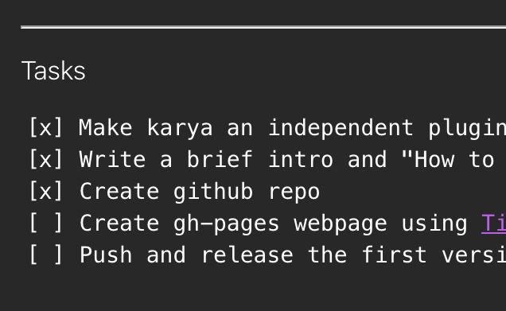
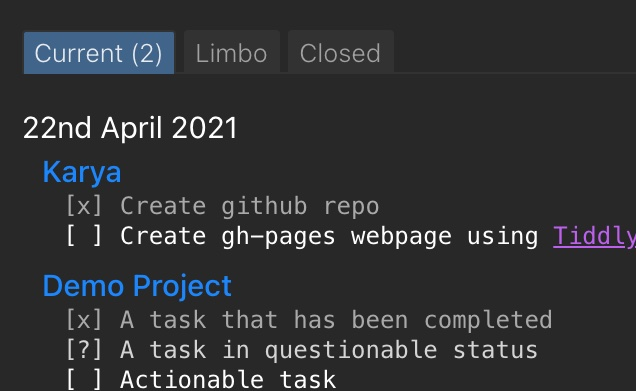

Plan Projects with tasks

Track todos elegantly
'Kārya' or 'कार्य' means task in Hindi.
I made Karya to suit my workflow, a complement to my bullet journal. Simply, it takes care of tracking projects and stays out of the way otherwise.
It works beautifully for my needs - it might be useful to you (or not)
-Adithya (https://adithyab.in)
How to use
- Import the plugin from the wiki at https://adithya-badidey.github.io/TW-Karya/wiki.html
- Drag and drop the plugin into your wiki.
- Now, if you tag any tiddler as a , you will see the tasks editor when you edit it.
- In the tasks editor, you should put a single task on each line. There are three types of entries:
[?] Task in limbo
[x] Completed Task
[ ] Active task- Once you add any tiddler as a , you will be able to see the tasks in view mode.
- The project tiddler will now be visible in the sidebar under the "Projects" tab.
- Projects are in active state by default and are visible in the "Current" Tab
- If a project is completed, tag it as and it will be moved to the "Closed" tab
- If a project is in limbo, tag it as and it will be moved to the "limbo" tab